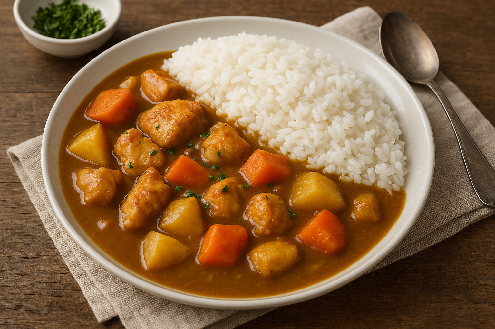

Japanese Chicken Curry

A comforting plate of Japanese Chicken Curry served with fluffy white rice, featuring tender chicken, carrots, and potatoes in a rich, savory curry sauce.
Japanese Chicken Curry (チキンカレー) is a beloved comfort food in Japan, known for its mild, slightly sweet flavor and thick, stew-like consistency. Unlike spicier Indian curries, this version uses Japanese curry roux blocks or a mix of curry powder, flour, and seasonings to create a deep, savory sauce that coats each ingredient beautifully. The dish combines juicy chicken pieces, hearty chunks of carrot and potato, and is traditionally served with a mound of warm Japanese rice for a satisfying, balanced meal.
This dish is incredibly popular in homes and restaurants across Japan, often enjoyed as a quick weeknight dinner or a cozy meal on a rainy day. Its simplicity and flexibility make it easy to prepare, and you can customize it with additional ingredients like onions, peas, or even a soft-boiled egg on top. Whether you're new to Japanese cuisine or a longtime fan, chicken curry is a delicious introduction to the country's comfort food culture.
Ingredients:
- 500g boneless chicken thighs or breasts, cut into bite-sized pieces
- 2 medium potatoes, peeled and cut into chunks
- 2 medium carrots, peeled and cut into chunks
- 1 large onion, sliced
- 2 tablespoons vegetable oil
- 3 cups (720 ml) water
- 1 block (100g) Japanese curry roux (e.g., Golden Curry, Vermont Curry, or homemade)
Steps:
- Prepare ingredients:
- Cut the chicken into bite-sized pieces.
- Peel and chop the potatoes and carrots into chunks.
- Slice the onion thinly.
- Heat the oil:
- In a large pot or deep pan, heat 2 tablespoons of vegetable oil over medium heat.
- Cook the onion and chicken:
- Add the sliced onions to the pot and sauté until they become translucent and slightly golden (about 5 minutes).
- Add the chicken pieces and cook until they are lightly browned on all sides but not fully cooked through (about 5-7 minutes).
- Add vegetables and water:
- Add the potato and carrot chunks to the pot.
- Pour in 3 cups (720 ml) of water, ensuring the ingredients are mostly covered.
- Simmer:
- Bring the mixture to a boil, then reduce heat to low and cover the pot.
- Let it simmer for about 15-20 minutes, or until the potatoes and carrots are tender and the chicken is cooked through.
- Add the curry roux:
- Break the curry roux block into smaller pieces.
- Stir the roux into the pot until it completely dissolves and thickens the sauce.
- Continue cooking on low heat for another 5-10 minutes, stirring occasionally, until the curry is rich and thick.
- Adjust seasoning and serve:
- Taste the curry and adjust seasoning if needed (you can add a little salt or soy sauce if desired).
- Serve the chicken curry hot over freshly steamed Japanese white rice.
Back